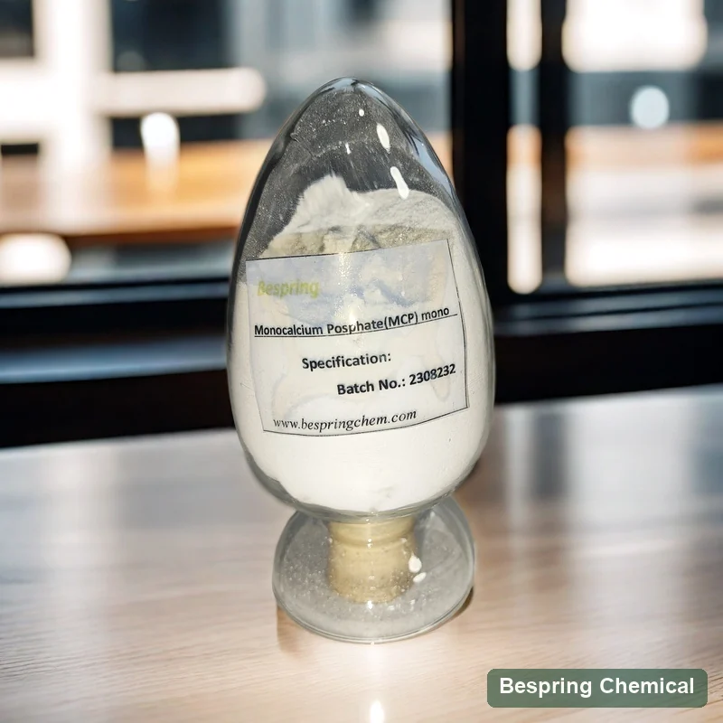
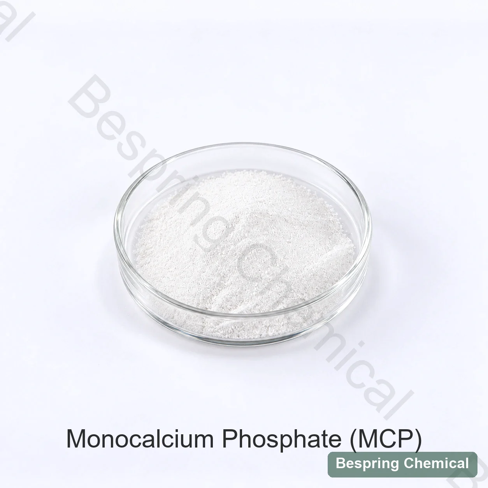
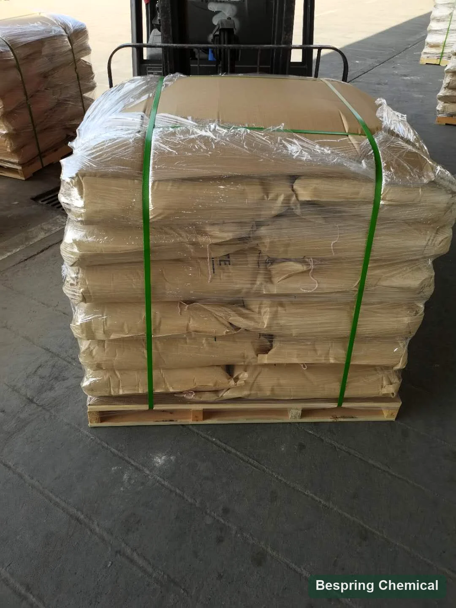

Food MCP monohydrate
CAS 10031-30-8
Evaluate this hydrated form for food leavening and other permitted functions. The calcium range is an elemental assay, not a purity percentage or a reaction-rate guarantee.
Food leavening phosphate · E341(i) / INS 341(i)
Bespring supplies food grade monocalcium phosphate monohydrate (MCP), an acidic calcium phosphate evaluated with sodium bicarbonate for bakery leavening. Before ordering, confirm CAS 10031-30-8, the food standard, calcium assay, neutralizing value and reaction profile for your formulation.
*Commercial source reference; the signed source specification and methods must be reconfirmed.

Product identity
Monocalcium phosphate monohydrate (MCP or MCPM), standardized as calcium dihydrogen phosphate, is the hydrated acidic calcium phosphate Ca(H2PO4)2·H2O. JECFA identifies the monohydrate as CAS 10031-30-8 under INS 341(i).
JECFA lists buffering, firming, sequestrant, leavening, dough-conditioning, texturizing, yeast-food and nutrient functions. In chemical leavening, water brings MCP and bicarbonate into reaction, releasing carbon dioxide; performance depends on the offered grade and process.
Identity, solubility and functional-use reference: JECFA calcium dihydrogen phosphate specification. These listed functions do not establish permission for every food or market.
Select the correct food grade
The abbreviation is shared across different hydration forms, coated leavening grades and animal-nutrition products. Formula alone does not qualify food use or predict reaction timing.
CAS 10031-30-8
Evaluate this hydrated form for food leavening and other permitted functions. The calcium range is an elemental assay, not a purity percentage or a reaction-rate guarantee.
CAS 7758-23-8
Anhydrous chemistry is separate. A slow-acting AMCP is commonly a specially coated/treated grade; “anhydrous” alone does not prove slow reaction.
Animal nutrition grade
Feed phosphorus/calcium, digestibility, fluorine, particle and registration requirements do not qualify material for food processing.
Receiving control: purchase description, label, lot, specification and COA must all identify the same hydration form and food-grade source. Do not release material using an agricultural or feed certificate.
Bakery performance—not a commodity assay alone
Neutralizing value (NV) is the parts by mass of sodium bicarbonate neutralized by 100 parts of leavening acid. It describes neutralization capacity; reaction rate describes when gas is released. The American Society of Baking MCP reference lists NV 80 and a fast reaction for conventional MCP. This is a technical reference, not a confirmed Bespring-grade value: request the offered grade’s NV, test method and gas-release data.
Use the certified NV to calculate a starting ratio. Then adjust only after measuring finished-product pH, taste, color and residual alkalinity/acidity.
Uncoated MCP monohydrate is generally screened as a fast-acting acid. Track gas loss during mixing, transfer and bench hold before the structure sets.
Where oven-stage gas is needed, MCP can be evaluated with a slower leavening acid. Calculate each acid from its own NV and confirm total reaction by bake testing.
Particle size, coating/treatment, moisture, temperature, water availability, batter viscosity and ingredient order can shift the apparent reaction profile.
See the ASB leavening-acid guide for the distinction between neutralizing value and reaction rate. Grade treatment and measured process behavior matter when comparing monohydrate with delayed-release products.
Application-specific screening
Food grade MCP is evaluated in baking powder, self-rising flour and chemically leavened mixes such as cakes, pancakes and biscuits. Select the grade around the actual mixing, holding and baking sequence; the checks below help define an application trial.
Set NV, gas-release split, particle compatibility, segregation, humidity protection and shelf reaction. Test after the intended packaging and storage period.
Evaluate early aeration, bench time, specific volume, cell structure, symmetry, crumb, color, pH and flavor under the actual mix and bake curve.
Measure spread, surface, color, texture and residual taste. Reaction balance can affect browning and dough handling as well as lift.
Where used for nutrient, buffering or firming functions, use certified calcium and phosphorus results and test dispersion, solubility and sensory suitability in the actual food. Composition alone does not establish an absorbed nutrient amount, a health benefit or a permitted nutrition claim.
Commercial reference specification
The following commercial reference limits are separate from batch COA results and do not establish full JECFA conformity. Sample basis and methods are not stated for several fields; agree the current signed specification and analytical methods before purchase.
On small screens, swipe the table to read the qualification notes.
| Field | Commercial reference | Qualification note |
|---|---|---|
| Appearance | White crystalline powder or flake crystals | Commercial description. Confirm the offered physical form and particle distribution; descriptive wording alone does not establish or disprove grade conformity. |
| Calcium (as Ca) | 15.9–17.7% | JECFA monohydrate assay range, expressed as elemental Ca. Commercial sample basis and method need confirmation; this is not 15.9–17.7% MCP purity. |
| P2O5 | 50.0–52.5% | P₂O₅ content is distinct from elemental phosphorus and MCP assay. Specify its analytical method and reporting basis. |
| CaO | 19.0–24.8% | Reported as CaO, not elemental Ca. Confirm whether the result is a measured or calculated equivalent and its basis; do not replace a COA result with a theoretical conversion. |
| Identification | Positive | Specify separate calcium and phosphate identification tests and methods. |
| Arsenic | ≤0.0003% (=3 mg/kg) | JECFA maximum: 3 mg/kg as arsenic. Confirm method and lot result. |
| Fluoride | ≤0.0001% (=1 mg/kg) | The commercial fluoride limit, ≤0.0001% as F (1 mg/kg), is tighter than JECFA’s 50 mg/kg. Agree it contractually and require a suitable method and batch COA. |
| Heavy metals (as Pb) | ≤0.0015% (=15 mg/kg) | Aggregate “as Pb” parameter; not a separate lead result or proof of all-element compliance. |
| Lead | ≤0.0005% (=5 mg/kg) | The reference limit is higher than JECFA’s 4 mg/kg; it cannot guarantee that requirement. |
| Cadmium / mercury | Each ≤0.0001% (=1 mg/kg) | Commercial fields; confirm destination limits and methods |
| “Loss on ignition” | ≤1.0% | The commercial field is loss on ignition. JECFA monohydrate uses loss on drying ≤1% at 60°C for 3 h; these are different tests unless method equivalence is established. |
| “Loss on heating” | ≤17.0% | Temperature, duration and sample basis are not stated. Do not equate heating loss with free moisture or loss on drying. |
| Clarity / carbonate / dissociable salts | Pass | Provide sample preparation, endpoint and source standard |
The commercial lead limit permits up to 5 mg/kg, while the cited JECFA monograph allows at most 4 mg/kg. An individual batch may test lower, but this reference specification cannot guarantee the JECFA limit. Request an aligned offered-grade specification and batch COA. The “loss on ignition” and “loss on heating” fields also require defined methods before comparison.
For mass-based reporting, 1% equals 10,000 mg/kg and 1 ppm equals 1 mg/kg. Calcium assay, P₂O₅, CaO and loss tests describe different attributes; matching selected numbers is not evidence of full conformity.
Monohydrate: Ca 15.9–17.7%, LOD ≤1% at 60°C for 3 h; both forms: fluoride ≤50, arsenic ≤3 and lead ≤4 mg/kg, plus identity tests.
Review the JECFA MCP monographRequest the signed specification/TDS, SDS and representative COA, followed by the actual batch COA. For baking, also request NV with method, reaction profile, particle distribution and treatment/coating status. Define any required pH, insolubles or microbiological tests. Confirm shelf life and current certificate availability, product/site scope and validity.
For US food use, 21 CFR 182.1217 covers calcium phosphate under good manufacturing practice; 21 CFR 182.8217 lists it in the nutrient category. These provisions do not certify a Bespring grade. Verify the destination’s permitted food category, conditions and labeling separately.
Bench-to-line approval
Require food-grade monohydrate, CAS 10031-30-8, source standard, label, signed specification and lot traceability.
Calculate the starting bicarbonate ratio from the offered grade, while accounting for other formula acids and alkaline ingredients.
Use matched water, temperature, mixer and hold time to track early and total gas release—not only final assay.
Compare volume, cells, symmetry, spread, color, pH, texture and taste against the approved benchmark.
Test humidity, packaging, storage time, segregation and premature acid–bicarbonate reaction.
Agree identity, Ca assay, impurities, NV/reaction, particle distribution and COA fields with methods and change control.
Storage and handling
Appearance and handling references


Buyer questions
This page covers food grade monocalcium phosphate monohydrate (MCPM), CAS 10031-30-8, formula Ca(H2PO4)2·H2O and formula weight 252.07 g/mol. Anhydrous MCP has CAS 7758-23-8 and a separate product page. Confirm the offered lot’s hydration form on the specification, label and COA.
No. The 15.9–17.7% reference range is calcium expressed as Ca, not MCP purity. P₂O₅ and CaO are separately reported composition fields. Require the analytical method and sample basis for each field rather than treating them as interchangeable assay results.
Conventional uncoated MCP monohydrate is used as a fast-reacting leavening acid with sodium bicarbonate. The offered grade’s particle properties, treatment and test conditions must be confirmed; actual mixing, holding and heating affect the gas-release profile. A delayed-release anhydrous grade is a separate selection.
NV is the mass of sodium bicarbonate neutralized by 100 parts by mass of leavening acid. The ASB reference lists 80 for conventional MCP, but Bespring’s current reference table does not specify a guaranteed NV or test method. Request grade-specific data; NV is neither reaction rate nor a universal food addition rate.
No. Its lead limit is 5 mg/kg, compared with the cited JECFA maximum of 4 mg/kg, and loss-test methods are undefined. A batch may test lower, but the reference limit cannot guarantee that requirement. Request a signed specification covering the selected standard and a batch COA with methods.
A feed-grade identity or COA does not qualify material for food processing. Specify food grade monohydrate and review the exact source, food standard, impurity controls, traceability and applicable documents for the intended market.
The commercial reference lists 25 kg bags, a 500 kg minimum order and 23 metric tons per 20-foot full container. The stated storage conditions are cool, dry and ventilated, not exceeding 30°C. Reconfirm packing, pallet configuration, loading, order terms and shelf life in the current offer.
Provide monohydrate food grade, required standard and destination, critical calcium and impurity limits, NV and reaction requirements, particle size, food application, bicarbonate level and process including hold time. Include quantity, packing, destination port, delivery terms and timing, plus required specification/TDS, SDS, COA and source-specific certificates.
Related grade and system pages
Compare the water-free identity, CAS 7758-23-8. Ask separately whether a delayed-release treatment is offered; hydration form alone does not establish reaction timing.
Compare MCP, SAPP and SALP by NV, reaction timing, hold time and bake results.
Compare available SAPP reaction-rate grades for delayed or blended gas release.
Compare acidic SALP grades and their measured reaction behavior for the intended baking process.
Compare food grade anhydrous calcium hydrogen phosphate, a different identity. Do not assume equal-dose substitution for MCP.
Use the animal-nutrition page for feed phosphorus, calcium and registration intent.
Identity- and performance-led sourcing
Include the exact identity and leavening method so the offer is not confused with anhydrous or feed-grade MCP.